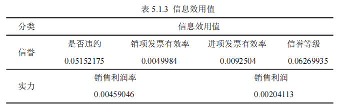
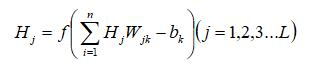
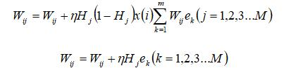
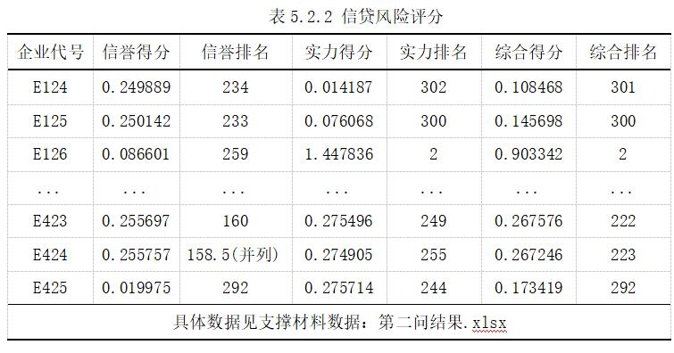
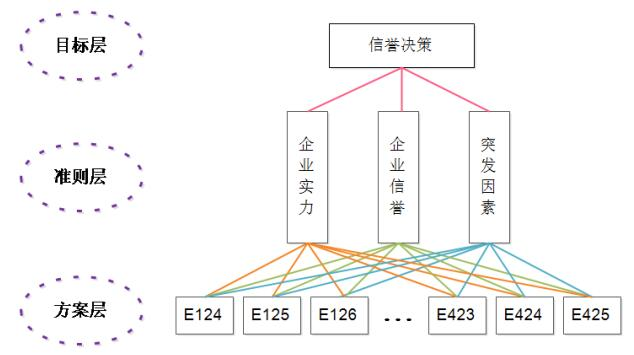

基于熵值法的中小微企业信贷政策
摘要
- 针对问题1，
- 针对问题2，
- 针对问题3，
- 关键词：熵值法、BP神经网络、层次分析法、贪心
一、问题重述
1.1 问题背景
1.2 问题重述
- 问题一：
- 问题二：
- 问题三：
二、问题分析
2.1 问题1的分析
2.2 问题2的分析
2.3 问题3的分析
三、模型假设
四、定义与符号声明
| 符号 | 符号意义 |
| Iamount | |
| Ivalue | |
| Oamount | |
| Oamount | |
| R | |
| Li | |
| Pi | |
| Beff | |
| Ball | |
| L | |
| N | |
| M |
五、模型的建立与求解
5.1 问题1模型的建立与求解
- 5.1.1 指标体系的建立

- 5.1.2 基于熵值法的信贷风险量化分析

- （1）模型的建立


- （2）问题求解

- 


- 5.1.3 信贷策略的提出
- （1）银行利润最大化

- （2）金额均衡分配化

- （3）两方案的最终信贷政策

5.2 问题2模型的建立与求解
- 5.2.1 BP神经网络模型的选择与建立
- （1）选择 BP 神经网络模型的原因
- （2）设计 BP 神经网络学习模型


- （3）设计 BP 神经网络预测模型

- 


- 

- 5.2.2 信贷策略的提出
- 5.2.3 模型的求解


- 

5.3 问题3模型的建立与求解
- 5.3.1 层次结构模型的建立
- （1）层次模型的构建
- 


- （3）得出金额
- 5.3.2 模型的求解


六、模型的评价与推广
6.1 模型的评价
- 6.1.1 问题一的模型评价
- 6.1.2 问题二的模型评价
- 6.1.3 问题三的模型评价
6.2模型的推广